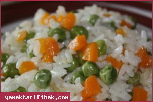

Kullanılan Malzemeler
Yarım paket makarna (yaklaşık 300 gr)
1 paket mantar (500 gr)
1 adet orta boy kuru soğan
1 adet kapya biber
1 adet yeşil biber (tatlı)
1 adet domates
1 yemek kaşığı tereyağı
2 yemek kaşığı sıvıyağ
tuz
Beşamel sos için:
1 buçuk yemek kaşığı un
1 buçuk su bardağı süt
1 yemek kaşığı tereyağ
2 yemek kaşığı sıvıyağ
tuz
karabiber
Üzeri için:
Rendelenmiş kaşar
Beşamel Soslu Mantarlı Fırında Makarna Yapılışı
Kullanılan Malzemeler
1 paket(500gr)içi boş kuru mantı
250gr.kıyma
2 yemek kaşığı tereyağ
2 yemek kaşığı salça
1 su bardağı haşlanmış nohut
1 çay kaşığı pulbiber ve nane
Sosu için:
1 kase yoğurt
2 veya 3 diş sarımsak
Kıymalı Nohutlu Mantı Yapılışı
Kullanılan Malzemeler
2 su bardağı pilavlık pirinç
250gr.kuş başı doğranmış et
1 su bardağı haşlanmış nohut
2 adet havuç
1 adet kuru soğan
2 yemek kaşığı tereyağ
3 yemek kaşığı sıvıyağ
4 su bardağı su
Acem Pilavı Yapılışı
Kullanılan Malzemeler
12 adet lazanya
Kıymalı harç için:
250 gram kıyma
1 orta boy soğan
3 orta boy domates
2 diş sarımsak
1 yemek kaşığı salça
Tuz, karabiber
Beşamel sos için:
3 yemek kaşığı un
1 yemek kaşığı tereyağı
6 su bardağı süt
tuz ve karabiber
Üzeri için:Kaşar peyniri
Kıymalı Beşamel Soslu Lazanya Yapılışı
Kullanılan Malzemeler
1 su bardağı pilavlık bulgur
1 çay bardağı haşlanmış yeşil mercimek
1 adet küçük ince kıyılmış soğan
1 çay bardağı zeytinyağı
1 tatlı kaşığı tuz
2 adet ince kıyılmış sivribiber
50 gram kıyma
2 su bardağı su
Tarif 4 kişiliktir, duruma göre ölçülerde değişiklik yapabilirsiniz.
Yeşil Mercimekli Bulgur Pilavı Yapılışı
Kullanılan Malzemeler
1 bütün tavuk
500 gr. pirinç
2 baş ince kıyılmış soğan
Yarım fincan yıkanmış kuş üzümü
Yarım fincan dolmalık fıstık
1 çay kaşığı karabiber
1 çay kaşığı tarçın
1 çay kaşığı yenibahar
1 tatlı kaşığı tuz
1 tatlı kaşığı şeker
1 demet dereotu
Yarım demet maydanoz
1 dal kereviz sapı
100 gram kuşbaşı doğranmış kuzu ciğeri
2 litre içme suyu
Tarif 6 kişiliktir, duruma göre ölçülerde değişiklik yapabilirsiniz.
Tavuklu İç Pilav Yapılışı
Kullanılan Malzemeler
1 su bardağı pirinç
1 su bardağı haşlanmış nohut
2 su bardağı sıcak su
3 yemek kaşığı tereyağ
1 küçük fincan tel şehriye
Nohutlu Pilav Yapılışı
Kullanılan Malzemeler
1 paket kuskus makarna
150 gr hellim peyniri
3 yemek kaşığı tereyağı
1 tatlı kaşığı tuz
Hellim Peynirli Kuskus Makarna Yapılışı
Kullanılan Malzemeler
1 Bardak Bulgur
1 Adet Soğan
2 Adet Domates
2 Yemek Kaşığı Tereyağı
2 Yemek Kaşığı Sıvı Yağ
Yarım Su Bardağı Haşlanmış Nohut
1 Adet Patates
2 Bardak Su
1 Tatlı Kaşığı Tuz
1 Çay Kaşığı Nane
1 Çay Kaşığı Karabiber
1 Yemek Kaşığı Salça
Patatesli Bulgur Pilavı Yapılışı
Kullanılan Malzemeler
1 paket makarna
2 adet patlıcan
2 adet kırmızı biber
2 adet sivri biber
2 diş sarımsak
2 yemek kaşığı salça
2 adet domates
1 yemek kaşığı tereyağı
Yarım demet kıyılmış maydanoz
1 çay kaşığı kuru fesleğen
tuz, karabiber
2 yemek kaşığı zeytin yağı
Patlıcanlı Makarna Yapılışı
Kullanılan Malzemeler
1 paket makarna
250 gr. ton balığı konservesi
5 çorba kaşığı sıvıyağ
2 diş sarımsak
2 çorba kaşığı domates salçası
1 fincan soğuk su
yarım çorba kaşığı kıyılmış maydanoz
tuz ve karabiber
Ton Balıklı Makarna Yapılışı
Kullanılan Malzemeler
3 adet yufka
200 gr kıyma
2 yemek kaşığı margarin
1 çay kaşığı kırmızı pul biber
½ çay kaşığı kimyon
2 adet sivribiber
Az tuz
Az karabiber
1 yemek kaşığı margarin (sosu için)
2 adet Knorr Et Bulyon (sosu için)
1 lt su (sosu için)
1 tatlı kaşığı nane (sosu için)
1 çay kaşığı sumak (sosu için)
1 yemek kaşığı salça (sosu için)
1 su bardağı yoğurt (üzeri için)
* 1 çay kaşığı Knorr Sarımsaklı Çeşni (üzeri için)
Kolay Mantı Yapılışı
Kullanılan Malzemeler
1 Su Bardağı Pirinç
2 Su Bardağı Su
1 Adet Soğan
2 Su Bardağı Turşu (Karışık ve Doğranmış)
Yarım Adet Limon
2 Yemek Kaşığı Sıvı Yağ
2 Yemek Kaşığı Tereyağı
Turşulu Pilav Yapılışı

Kullanılan Malzemeler
2 Su Bardağı Pilavlık Pirinç
1 Kutu Hazır Garnitür
2 Yemek Kaşığı Tereyağı veya Margarin
3 Su Bardağı Sıcak Su
1 Tatlı Kaşığı Tuz
Sebzeli Pilav Yapılışı